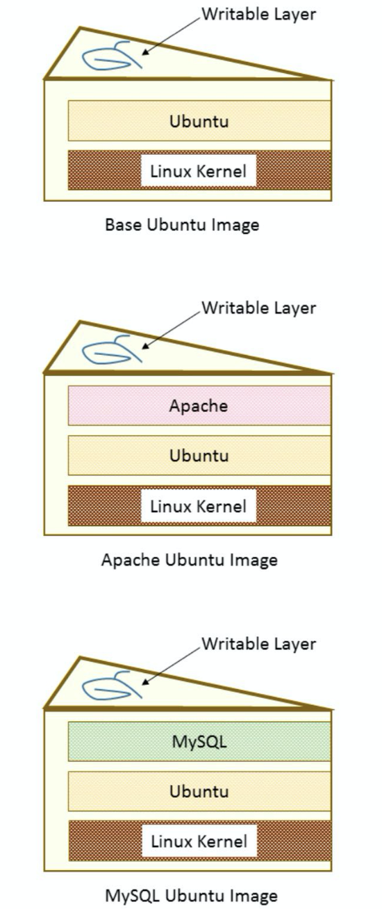

This blog is based on the book Getting started with Kubernetes by Jonathan Baier. Some personal understanding is added. It won't tell you the basic usage on k8s, but provide some ideas about what it is for and why it is needed. Its usage will be covered in later blogs.
Overview of the containers
Containers make the application environments portable and consistent across all infrastructure landscapes. Docker, as an organization, makes containers easy to implement and replicate across environments and providers. Images are the specific instances for containers, they are just like a small filesystem with multiple configuration data and so on.
Unlike VM, containers care about the specific application. Vm needs to get a full set of OS and other applications before formal usage, containers don't.
Container Core
At the core for the container are the control groups and namespaces.
Control groups(cgroups):
- Allow the host to share
- Limit the resource for each process or container.
In this case, cgroups prevents denial-of-service attack on the hardware resources. Several containers share CPU and memory.
Namespaces:
- Container processes are limited to see only what is in the same namespace.
- Docker gives each container its own networking stack that protects the sockets and interfaces in a similar fashion.
Namespace limits the visibility for containers on other processes and so on.
Union filesystem
Besides the above two, the Union filesystem is also an advantage for Docker containers. As container images snapshot the filesystem, but tend to be much smaller than a VM. In addition, it allows for efficient storage, download, and execution of these images.
Why does it show such high efficiency? Think of the filesystem as a layered cake.

Each layer is baked independently, so we can easily subsitude each without baking them again.
Overview of Continuous Integration/Continuous Deployment
Continuous intergration: A development practice that requires developers to integrate code into a shared repository several times a day. In this case, the organazation can instill quality control and testing as partof the everyday work cycle. Thus, any bugs will happen faster.
In short, you should commit frequently. After each commit, auto-tests will be run. Only after passing the auto-tests will your code be merged into the main repository and get deployed. In this case, you should be able to find your bugs much easier than merging a huge block of codes at one time. After pass the tests, a new image will be created and get pushed to the Docker repo for later deployments.
Overview of Microservices and orchestration
microservices: In short, the microservice architectural style is an approach to developing a single application as a suite of small services, each running in its own process and communicating with lightweight mechanisms, often an HTTP resource API.
These services are built around business capabilities and independently deployable by fully automated deployment machinery. There is a bare minimum of centralized management of these services, which may be written in different programming languages and use different data storage technologies.
In this case, containers become a wonderful solution for the varous microservices with different infrastructure.
Challenges for containers
- Life cycle. When a container fail, how to recover? What to do with the upstream services?
- Networking. How to place containers in a cluster?
- Resource Utilization. How to schedule workload and resources?
- Portability. How will we move containers between different nodes on our cluster?
The coming of Kubernetes
A data center management tool which helps deal with resource utilization, high availability, updates, patching, networking, service discovery, monitoring, and logging.